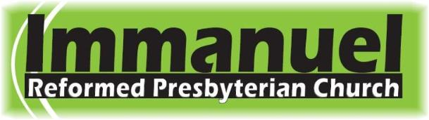

LOCATION: We meet at the West Lafayette Seventh-day Adventist Church. (Google Map)
A new old church! This is what we hope you'll find with Immanuel Reformed Presbyterian Church. IRPC is a very new congregation being established in West Lafayette, Indiana. While being new isn't always all it's cracked up to be, we're enjoying this time of walking by faith and participating in the growth of Christ's church. Better than being new, we're also quite old. After all, our Savior walked this earth two thousand years ago. Because our faith is an ancient faith, we're not after inventiveness, but faithfulness.
Our denomination (the Reformed Presbyterian Church of North America) is one of the oldest evangelical churches in America, stretching back to 1743 in America and even further back to Scotland. We hope, then, that if you worship with us, you'll catch a bit of our excitement for what God is doing with us right now; more than that, we hope you'll find a congregation more passionate about the transcendent glory of the Triune God than with trends in worship or theology or even with our own comfort.
Consider yourself invited to worship with us! We meet for worship every Sunday morning at 11:00 a.m. and Sunday evening at 5:30 p.m. (map). Our Bible school hour is 10:00 a.m. For more information, please call us at (765) 477-7025 or email Pastor Jared Olivetti.